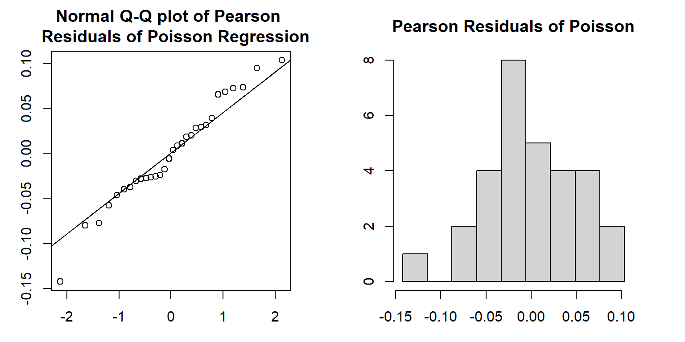
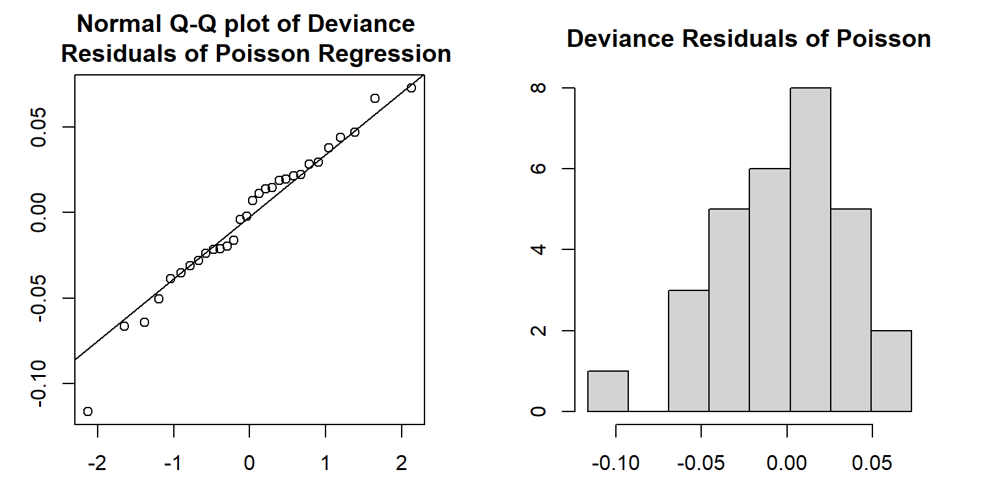
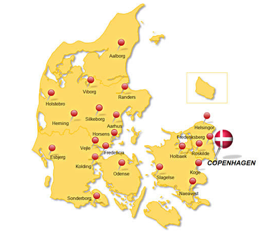
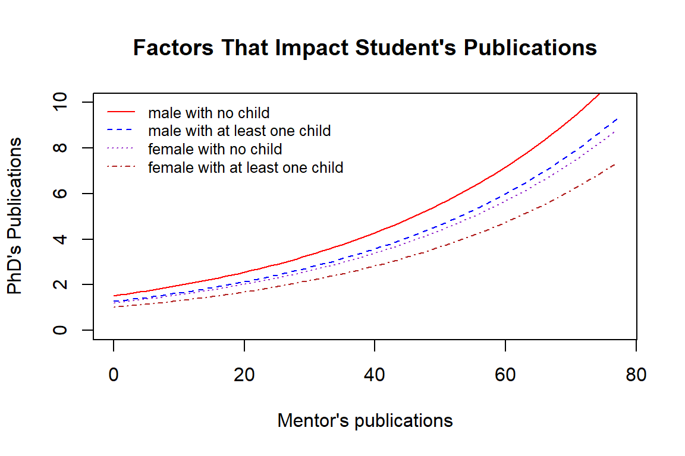

Topic 13 Dispersed Poisson Regression
In the last module, we introduced the basics of Poisson regression on counts and rates. Sometimes Poisson regression may not work well since the variance of the response may not be equal to the mean. In this module, we will look into the issue of potential dispersion and other relevant issues and find an alternative count and rate regression model.
The general structure of the Poisson regression model is given by
\[ \log \mu(x) = \beta_0 + \beta_1 x_1 + \cdots + \beta_p x_p \]
There are several assumptions for the Poisson regression model. The most important one is that the mean and variance of the response variable are equal. The other assumption is the linear relationship between the explanatory variables and the log mean of the response. It is not straightforward to detect the potential violation of these assumptions. In the next section, we define some metrics based on residuals based on the hypothetical model and the observed data.
The learning objectives of this module are (1) to develop measures to detect the violation of the assumptions of the Poisson regression, (2) to define a measure to estimate the dispersion, (3) to introduce the quasi-likelihood Poisson regression model to make robust inference of the regression coefficients.
13.1 Residuals of Poisson Regression
In linear regression, we can use the residual plots to check the potential violation of the model assumption since the residuals are normally distributed with zero mean and constant standard deviation if the model is appropriate. In Poisson regression, we can mimic the way of defining the kind of residuals as we did in linear regression. Under the large sample assumptions, these residuals are approximately normally distributed if the underlying hypothetical model is appropriate. Using this large sample property, we can define some metrics to detect the potential violation of the model assumptions.
Recall that the residual of \(i\)-th observation under a model defined by
\[ e_i = y_i - \hat{\mu}_i.\]
where \(\hat{\mu}_i\) is the fitted value based on the hypothetical model \(\log(\mu) = \hat{\beta}_0 + \hat{\beta}_1x_1 + \cdots + \hat{\beta}_p x_p\). The regression coefficients can be estimated using least squares and likelihood methods.
Next, I am going to use a portion of NYC cyclist data (you will use similar data for this week’s assignment). I will use this data set as an example to explain the concepts and models discussed in this module.
cyclist = read.csv("dat/w10-NYCcyclistData.csv")
cyclist$log.Brooklynbridge = log(cyclist$BrooklynBridge)
m0.loglinear = lm(log.Brooklynbridge ~ Day + HighTemp + LowTemp + Precipitation,
data = cyclist)
m1.Poisson = glm(BrooklynBridge ~ Day + HighTemp + LowTemp + Precipitation,
family = poisson(link = "log"), offset = log(Total), data = cyclist)- Least Square Estimate (LSE) of \(\beta\)’s
In this method, we need to take the logarithm of the observed count as in the data table as shown in the following table.
| ID | \(x_1\) | \(x_2\) | … | \(x_k\) | \(y\) (counts) | log-count [\(\log(y)\)] |
|---|---|---|---|---|---|---|
| 1 | \(x_{11}\) | \(x_{21}\) | … | \(x_{k1}\) | \(y_1\) | \(\log(y_1)\) |
| 2 | \(x_{12}\) | \(x_{22}\) | … | \(x_{k2}\) | \(y_2\) | \(\log(y_2)\) |
| … | … | … | … | … | … | … |
| n | \(x_{1n}\) | \(x_{2n}\) | … | \(x_{kn}\) | \(y_n\) | \(\log(y_n)\) |
We can use the log of the observed count and values of the explanatory variables to find the least square estimates (LSE) of the regression coefficients, denoted by \(\tilde{\beta}_0, \tilde{\beta}_1, \cdots, \tilde{\beta}_p\), of the Poisson regression model. Then the \(i\)-th fitted value \(\hat{\mu}_i = \exp(\tilde{\beta}_0 + \tilde{\beta}_1 x_1 + \cdots + \tilde{\beta}_p x_p)\).
- Maximum Likelihood Estimate (MLE) of \(\beta\)’s
Since the response variable is assumed to have a Poisson with its mean \(\mu_j = \exp(\beta_0 + \beta_1 x_{1j} + \cdots + \beta_p x_{pj})\). The kernel of the log-likelihood of observing the data set is defined in the following
\[ l(\beta_0, \beta_1, \cdots, \beta_p) \propto \sum_{j=1}^n \left[y_j(\beta_0 + \beta_1 x_{1j} + \cdots + \beta_p x_{pj})-\exp(\beta_0 + \beta_1 x_{1j} + \cdots + \beta_p x_{pj}) \right] \]
The MLE of the \(\beta\)’s, denoted by \(\hat{\beta}_0, \hat{\beta}_1, \cdots, \hat{\beta}_p\), maximizes the above log-likelihood through solving the following score equations,
\[ \left\{ \begin{array}{ccccc} \frac{\partial l(\beta_0, \beta_1, \cdots, \beta_p)}{\partial \alpha_0} & = & \frac{\partial}{\partial \alpha_0}\sum_{j=1}^n \left[y_j(\beta_0 + \beta_1 x_{1j} + \cdots + \beta_p x_{pj})-\exp(\beta_0 + \beta_1 x_{1j} + \cdots + \beta_p x_{pj}) \right] & = & 0 \\ \frac{\partial l(\beta_0, \beta_1, \cdots, \beta_p)}{\partial \alpha_1} & = & \frac{\partial}{\partial \alpha_1}\sum_{j=1}^n \left[y_j(\beta_0 + \beta_1 x_{1j} + \cdots + \beta_p x_{pj})-\exp(\beta_0 + \beta_1 x_{1j} + \cdots + \beta_p x_{pj}) \right]& = & 0 \\ \cdots & \cdots &\cdots & \cdots &\cdots\\ \frac{\partial l(\beta_0, \beta_1, \cdots, \beta_p)}{\partial \alpha_{p}} & = & \frac{\partial}{\partial \alpha_p}\sum_{j=1}^n \left[y_j(\beta_0 + \beta_1 x_{1j} + \cdots + \beta_p x_{pj})-\exp(\beta_0 + \beta_1 x_{1j} + \cdots + \beta_p x_{pj}) \right]& = & 0 \\ \end{array} \right. \]
With the MLE, we can find the fitted value by \(\hat{\mu}_i = \exp(\hat{\beta}_0 + \hat{\beta}_1 x_1 + \cdots + \hat{\beta}_p x_p)\).
13.1.1 Pearson Residuals
The Pearson residual of \(i\)-th observation is defined to be
\[ \text{Pearson.Residual}_i = \frac{y_i-\hat{\mu}_i}{\sqrt{\hat{\mu}_i}} \]
Pearson residuals are the standardized value of the observed \(y_i\) with the assumption that \(Y_i\) is a Poisson normal random variable. Under a large sample assumption, we would expect that residuals are approximately normally distributed. We can use this property to assess the appropriateness of the Poisson regression model. Equivalently, the square of the Pearson residual is a chi-square distribution with one degree of freedom.
Next, we extract the residuals (\(y_i-\hat{\mu}_i\)) direct from the linear regression model and then divided by the square root of \(\hat{\mu}_i\), fitted values of \(y_i\), to find the Pearson residuals.
par(mfrow=c(1,2), mar=c(3,3,3,3))
resid.loglin = m0.loglinear$residuals
fitted.loglin = m0.loglinear$fitted.values
pearson.resid = resid.loglin/sqrt(fitted.loglin)
qqnorm(pearson.resid, main = "Normal Q-Q plot of Pearson \n Residuals of Poisson Regression")
qqline(pearson.resid)
##
seq.bound=seq(range(pearson.resid)[1], range(pearson.resid)[2], length=10)
hist(pearson.resid, breaks = seq.bound,
main = "Pearson Residuals of Poisson")
Both the Q-Q plot and histogram indicate that the distribution of Pearson residuals is skewed. There is a discrepancy between frequency distribution and normal distribution. Since the Pearson residuals are derived based on the least square algorithm, they don’t have good distributional properties to develop a test.
13.1.2 Deviance Residuals
Deviance residuals of Poisson regression are defined based on the likelihood method in the following
\[ \text{Deviance.Residual}_i=\text{sign}(y_i - \hat{\mu}_i)\sqrt{2\left[y_i\log(y_i/\hat{\mu}_i) -(y_i-\hat{\mu}_i)\right]} \]
where
\[ \text{sign}(x) = \begin{cases} 1 & \text{if } x \geq 0 \\ - 1 & \text{if } x < 0 \\ 0 & \text{if } x =0 \end{cases} \]
Since the deviance residuals based on Poisson regression are defined based on the likelihood, there are asymptotically normally distributed. We can use this asymptotic property of normal distribution to assess the appropriateness of the Poisson regression.
13.1.3 Numerical Example
The residual deviance of Poisson (or other generalized linear models) is defined to be the sum of all deviance residuals: \(\text{deviance} =\sum_i(\text{deviance.residual}_i)^2\). In the output of glm() in R, the null deviance residual (corresponding to the model with no explanatory variable in it) and deviance residual (corresponding to the fitted model) are reported with the corresponding degrees of freedom.
Figure 13.1: R glm() output of Poisson regression model
We can see from the Poisson regression output in R that only deviance residuals and the corresponding descriptive statistics are reported (the five-number-summary of deviance residuals, null deviance, and deviance with corresponding degrees of freedoms). This is because the inference of Poisson regression in glm() is based on the likelihood theory.
We can also extract the deviance residuals from glm() object and make a Q-Q plot in the following
par(mfrow=c(1,2), mar=c(3,3,3,3))
qqnorm(m1.Poisson$residuals,
main = "Normal Q-Q plot of Deviance \n Residuals of Poisson Regression")
qqline(m1.Poisson$residuals)
resid.m1 = m1.Poisson$residuals
seq.bound=seq(range(resid.m1)[1], range(resid.m1)[2], length=9)
hist(m1.Poisson$residuals, breaks = seq.bound,
main = "Deviance Residuals of Poisson")
Both Q-Q plot and histogram indicate that the distribution of the deviance residuals is slightly different from a normal distribution. If the model is correctly specified, the sum of squared residuals \(\sum_i(\text{Deviance.Residual}_i)^2\) is distributed as \(\chi^2_{n-p}\). The deviance and the degrees of freedom of the deviance are given in the output of the glm() (see the output given in the above figure).
For example, we next extract the deviance and degrees of freedom from the output and perform a chi-square test.
deviance.resid = m1.Poisson$deviance
deviance.df = m1.Poisson$df.residual
# p-value of chi-square test
p.value = 1-pchisq(deviance.resid, deviance.df)
pval = cbind(p.value = p.value)
kable(pval, caption="The p-value of deviance chi-square test")| p.value |
|---|
| 0 |
The p-value is almost equal to zero. The assumption of the Poisson regression model was violated.
13.1.4 Goodness-of-fit
The deviance has an asymptotic \(\chi^2_{n-p}\) distribution if the model is correct. If the p-value calculated based on the deviance from \(\chi^2_{n-p}\) is less than the significance level, we claim the model has a poor fit (also lack-of-fit, badness-of-fit). There could be different reasons that cause the poor fit. For example, (1) data issues such as outliers, (2) functional form of the explanatory variables (non-linear relationship between the log of the mean of the response), (3) missing some important explanatory variable in the data set, (4) dispersion issue, etc.
The deviance residual can be used naturally to compare hierarchical models by defining the likelihood ratio chi-square tests.
The dispersion issue will be detailed in the next section.
13.2 Dispersion and Dispersed Poisson Regression Model
The issue of Over-dispersion in Poisson regression is common. It indicates that the variance is bigger than the mean.
13.2.1 Definition of Dispersion
To detect over-dispersion (i.e., the violation of the assumption in Poisson regression), we define the following dispersion parameter
\[ \hat{\phi} = \frac{\sum_i(\text{Pearson.Residual}_i)^2}{n-p} , \]
where \(p\) is the number of regression coefficients. Note that \(\sum_i(\text{Pearson.Residual}_i)^2\) has a \(\chi_{n-1}^2\) if the Poisson assumption is correct. Since the expectation of a chi-square distribution is equal to the degrees of freedom, this means that the estimated dispersion parameter, \(\hat{\phi}\), should be around 1 if the Poisson assumption is correct. Therefore, the estimated dispersion parameter can be used to detect potential dispersion issues.
- Impact of Dispersion
Over-dispersion means the assumptions of the Poisson model (or other models in the exponential family) are not met, therefore, the p-values in the output of glm() with the regular log link in the poisson family are not reliable. We should use p-values in the output to perform significant tests and use them for variable selection.
13.2.2 Quasi-Poisson Regression Model
We can make an adjustment to the Poisson variance by adding a dispersion parameter. In other words, while for Poisson data \(\bar{Y} = s^2_Y\), the quasi-Poisson allows for \(\bar{Y} = \phi \cdot s^2_Y\), and estimates the over-dispersion parameter \(\phi\) (or under-dispersion, if \(\phi < 1\)). The estimated \(\phi\) is given earlier.
The parameters of the Poisson regression model are estimated based on the following adjusted score equations.
\[ \left\{ \begin{array}{ccccc} \frac{\partial}{\partial \alpha_0} \frac{\sum_{j=1}^n \left[y_j(\beta_0 + \beta_1 x_{1j} + \cdots + \beta_p x_{pj})-\exp(\beta_0 + \beta_1 x_{1j} + \cdots + \beta_p x_{pj}) \right]}{\phi} & = & 0 \\ \frac{\partial}{\partial \alpha_1}\frac{\sum_{j=1}^n \left[y_j(\beta_0 + \beta_1 x_{1j} + \cdots + \beta_p x_{pj})-\exp(\beta_0 + \beta_1 x_{1j} + \cdots + \beta_p x_{pj}) \right] }{\phi}& = & 0 \\ \cdots & \cdots &\cdots \\ \frac{\partial}{\partial \alpha_p}\frac{\sum_{j=1}^n \left[y_j(\beta_0 + \beta_1 x_{1j} + \cdots + \beta_p x_{pj})-\exp(\beta_0 + \beta_1 x_{1j} + \cdots + \beta_p x_{pj}) \right] }{\phi}& = & 0 \\ \end{array} \right. \]
Note that the above score equations are not derived from the loglikelihood function of the regular Poisson regression model. Unlike the likelihood-based goodness of fit measures such as deviance, AIC, and SBC measures should not be used in inference.
Apparently, the estimated regression coefficients are identical since the scale parameter \(\phi\) will not impact the solution to the linear system. However, the variance \(\text{V}(\mathbf{Y}) = \phi \text{V}(\hat{\mu})\). Thus, we now have a parameter that allows the variance to be larger or smaller than the mean by a multiplicative factor \(\phi\). Hence, it will affect the inference of QMLE of the regression coefficients
\[ \hat{\mathbf{\beta}} \to \mathbf{N}[\mathbf{\beta},~ \phi(\mathbf{X}^T\mathbf{WX})^{-1}] \] That means the standard errors of \(\hat{\beta}_i\) (\(i = 0,1, 2, \cdots, k\)) are different from the MLE in the regular Poisson regression. Because of this, the reported p-values are also different from those of the output of the regular Poisson regression model.
13.2.3 Numerical Example
Next, we use glm() to fit the quasi-Poisson model and compare its output with that of the regular Poisson regression.
m2.quasi.pois = glm(BrooklynBridge ~ Day + HighTemp + LowTemp + Precipitation,
family = quasipoisson, offset = log(Total), data = cyclist)Figure 13.2: R glm() output of quasi-Poisson regression model
We can see from the output of the quasi-likelihood-based Poisson regression that the dispersion parameter is \(\hat{\phi} = 5.420292\). Since the dispersion parameter is significantly different from 1, the p-values in the output of the Poisson regression model are not reliable. The main effect is the substantially larger errors for the estimates (the point estimates do not change), and hence potentially changed the significance of explanatory variables.
We can manually compute the corrected standard errors in the quasi-Poisson model by adjusting the standard error from the Poisson standard errors using relation \(SE_Q(\hat{\beta})=SE(\hat{\beta})\times \sqrt{\hat{\phi}}\). For example, considering the standard error of \(\hat{\beta}_1\) (associated with dummy variable DayMonday), \(SE(\hat{\beta}_1) = 0.0134153\), in the output of the regular Poisson regression model. The corresponding corrected standard error in the quasi-Poisson model is given by \(\sqrt{5.420292}\times 0.0134153 = 0.03123286\), which is the same as the one reported in the quasi-Poisson model.
13.2.4 Summary and Concluding Remarks
We have introduced regular Poisson and quasi-Poisson regression modes in this and previous notes. The two models use the same formulation, but different estimations are used. The regular Poisson model is based on the likelihood estimation, all statistics reported in the out are valid. However, the quasi-Poisson model is not based on the standard maximum likelihood estimation, and not all reported statistics can be used for inference.
- Regular Poisson Model
- Assume \(Y\) to be a Poisson random variable.
- link function is \(\log(\cdot)\) , the model is defined to be \(\log(\mu) =\beta_0 + \sum_{i=1}^k \beta_ix_i\)
- Score equation: first-order partial derivative of the log-likelihood function
- Parameter estimation - MLE via Fisher scoring algorithm
- Regression coefficient is log risk ratio.
- Pearson and Deviance residuals are defined for model diagnosis.
- All likelihood-based statistics such as R-square, AIC, and SBC are valid and can be used as usual.
- Quasi-Poisson Model:
- Assume \(Y\) to be a Poisson random variable.
- link function is \(\log(\cdot)\) , the model is defined to be \(\log(\mu) =\beta_0 + \sum_{i=1}^k \beta_ix_i\)
- Score equation: first order partial derivative of the scaled log-likelihood function (quasi-likelihood).
- Parameter estimation - MLE via Fisher scoring algorithm
- Regression coefficient is log risk ratio.
- Pearson and Deviance residuals are defined for model diagnosis.
- All likelihood based statistics such as R-square, AIC, SBC are theoretically invalid.
- Which Model Should Be Used?
- In predictive modeling, both models will yield the same results.
- In the association analysis, the regular Poisson model should be used when dispersion is not an issue (i.e., \(\phi\) is close to 1.). However, the quasi-Poisson should be used when \(\phi\) is significantly different from 1.
- When there is no dispersion, could we simply use the quasi-Poisson in the association analysis? The answer is No. The reason is that the additional approximation was used to adjust the estimation of the standard error and the approximation also add rounding errors to the result. From the computational perspective, it uses more system resources.
13.3 Case Study I: Denmark Cities Lung Cancer Rates
This is a complete analysis of the case study of Denmark Cities Ling Cancer rate we started in the previous module.
13.3.1 Introduction
The World Health Organisation (WHO) statistics suggest that Denmark has the highest cancer rates in the world, with about 326 people out of every 100,000 developing cancer each year. The country is known to have a good record of diagnosing cancer but also has high rates of smoking among women and high levels of alcohol consumption.

In this case study, we use a data set that summarized the lung cancer incident counts (cases) per age group for four Danish cities from 1968 to 1971. The primary random response variable is lung cancer cases. The predictor variables are the age group and the total population size of the neighboring cities.
The data set was built in the R library {ISwR}.
| city | age | pop | cases |
|---|---|---|---|
| Fredericia | 40-54 | 3059 | 11 |
| Horsens | 40-54 | 2879 | 13 |
| Kolding | 40-54 | 3142 | 4 |
| Vejle | 40-54 | 2520 | 5 |
| Fredericia | 55-59 | 800 | 11 |
| Horsens | 55-59 | 1083 | 6 |
Since it’s reasonable to assume that the expected count of lung cancer incidents is proportional to the population size, we would prefer to model the rate of incidents per capita. However, for the purpose of illustration, we will fit the Poisson regression model with both counts and rate of cancer rates.
13.3.2 Poisson Regression on Cancer Counts
We first build a Poisson frequency regression model and ignore the population size of each city in the data.
model.freq <- glm(cases ~ city + age, family = poisson(link = "log"), data = eba1977)
##
pois.count.coef = summary(model.freq)$coef
kable(pois.count.coef, caption = "The Poisson regression model for the counts of lung
cancer cases versus the geographical locations and the age group.")| Estimate | Std. Error | z value | Pr(>|z|) | |
|---|---|---|---|---|
| (Intercept) | 2.2437446 | 0.2036265 | 11.0189233 | 0.0000000 |
| cityHorsens | -0.0984401 | 0.1812909 | -0.5429952 | 0.5871331 |
| cityKolding | -0.2270575 | 0.1877041 | -1.2096561 | 0.2264109 |
| cityVejle | -0.2270575 | 0.1877041 | -1.2096561 | 0.2264109 |
| age55-59 | -0.0307717 | 0.2480988 | -0.1240298 | 0.9012916 |
| age60-64 | 0.2646926 | 0.2314278 | 1.1437369 | 0.2527328 |
| age65-69 | 0.3101549 | 0.2291839 | 1.3533017 | 0.1759593 |
| age70-74 | 0.1923719 | 0.2351660 | 0.8180261 | 0.4133423 |
| age75+ | -0.0625204 | 0.2501222 | -0.2499593 | 0.8026188 |
The above inferential table about the regression coefficients indicates both city and age are insignificant. This means, if we look at cancer count across the age group and city, there is no statistical evidence to support the potential discrepancy across the age groups and cities. However, this does not imply that the model is meaningless from the practical perspective since statistical significance is not equivalent the clinical importance. Moreover, the sample size could impact the statistical significance of some of the variables.
The other way to look at the model is the appropriateness model. The cancer counts are dependent on the population size. Ignoring the population size implies the information in the sample was not effectively used. In the next subsection, we model the cancer rates that involve the population size.
The other way to look at the model is goodness of the model. The cancer counts are dependent on the population size. Ignoring the population size implies the information in the sample was not effectively used. In the next subsection, we model the cancer rates that involve the population size.
13.3.3 Poisson Regression on Rates
The following model assesses the potential relationship between cancer death rates and age. This is the primary interest of the model. We also want to adjust the relationship be the potential neighboring cities.
model.rates <- glm(cases ~ city + age, offset = log(pop),
family = poisson(link = "log"), data = eba1977)
kable(summary(model.rates)$coef, caption = "Poisson regression on the rate of the
the cancer rate in the four Danish cities adjusted by age.")| Estimate | Std. Error | z value | Pr(>|z|) | |
|---|---|---|---|---|
| (Intercept) | -5.6320645 | 0.2002545 | -28.124529 | 0.0000000 |
| cityHorsens | -0.3300600 | 0.1815033 | -1.818479 | 0.0689909 |
| cityKolding | -0.3715462 | 0.1878063 | -1.978348 | 0.0478895 |
| cityVejle | -0.2723177 | 0.1878534 | -1.449629 | 0.1471620 |
| age55-59 | 1.1010140 | 0.2482858 | 4.434463 | 0.0000092 |
| age60-64 | 1.5186123 | 0.2316376 | 6.555985 | 0.0000000 |
| age65-69 | 1.7677062 | 0.2294395 | 7.704455 | 0.0000000 |
| age70-74 | 1.8568633 | 0.2353230 | 7.890701 | 0.0000000 |
| age75+ | 1.4196534 | 0.2502707 | 5.672472 | 0.0000000 |
The above table indicates that the log of cancer rate is not identical across the age groups and among the four cities. To be more specific, the log rates of Fredericia (baseline city) were higher than in the other three cities. The youngest age group (45-55) has the lowest log rate. The regression coefficients represent the change of log rate between the associate age group and the reference age group. The same interpretation applies to the change in log rate among the cities.
13.3.4 Quasi-Poisson Rate Model
The above two Poison models assume that there is no dispersion issue in the model. The quasi-Poisson through glm() returns the dispersion coefficient.
quasimodel.rates <- glm(cases ~ city + age, offset = log(pop),
family = quasipoisson, data = eba1977)
kable(summary(model.rates)$coef, caption = "Quasi-Poisson regression on the rate of the cancer rate in the four Danish cities adjusted by age.")| Estimate | Std. Error | z value | Pr(>|z|) | |
|---|---|---|---|---|
| (Intercept) | -5.6320645 | 0.2002545 | -28.124529 | 0.0000000 |
| cityHorsens | -0.3300600 | 0.1815033 | -1.818479 | 0.0689909 |
| cityKolding | -0.3715462 | 0.1878063 | -1.978348 | 0.0478895 |
| cityVejle | -0.2723177 | 0.1878534 | -1.449629 | 0.1471620 |
| age55-59 | 1.1010140 | 0.2482858 | 4.434463 | 0.0000092 |
| age60-64 | 1.5186123 | 0.2316376 | 6.555985 | 0.0000000 |
| age65-69 | 1.7677062 | 0.2294395 | 7.704455 | 0.0000000 |
| age70-74 | 1.8568633 | 0.2353230 | 7.890701 | 0.0000000 |
| age75+ | 1.4196534 | 0.2502707 | 5.672472 | 0.0000000 |
The dispersion index can be extracted from the quasi-Poisson object with the following code
ydif=eba1977$cases-exp(model.rates$linear.predictors) # diff between y and yhat
prsd = ydif/sqrt(exp(model.rates$linear.predictors)) # Pearson residuals
phi = sum(prsd^2)/15 # Dispersion index: 24-9 = 15
kable(cbind(Dispersion = phi))| Dispersion |
|---|
| 1.504109 |
13.3.5 Final Working Model
The dispersion index is 1.56. It is slightly dispersed. We stay with the regular Poisson regression model.
The intercept represents the baseline log-cancer rate ( of baseline age group 44-55 in the baseline city Fredericia). The actual rate is \(\exp(-5.6321) \approx 0.36\%\) which is close to the recently reported rate of the country by WHO. The slope \(-0.3301\) is the difference of the log-rates between baseline city Fredericia and the city of Horsens at any given age group, to be more specific, \(\log(R_{\text{Horsen}}) - \log(R_{\text{Fredericia}}) = -0.3301\) which is equivalent to
\[ \log \left( \frac{R_{\text{Horsen}}}{R_{\text{Fredericia}}} \right) = -0.3301 ~~~\Rightarrow~~~\frac{R_{\text{Horsen}}}{R_{\text{Fredericia}}} = e^{-0.3301} \approx 0.7188518. \]
This means, with fixed age groups, the cancer rate in Horsens is about \(28\%\) lower than that in Fredericia. Next, we look at the coefficient \(1.4197\) associated with age group \(\text{75+}\). For any given city,
\[ \log \left(\frac{R_{\text{age75+}}}{R_{\text{age45-54}}} \right) = 1.4197~~~\Rightarrow~~~\frac{R_{\text{age75+}}}{R_{\text{age45-54}}} = e^{1.41971} \approx 4.135921. \]
This implies that the cancer rate in the age group 75+ is 4.14 times that of the baseline age group of 45-54.
13.3.6 Some Visual Comparisons
The inferential tables of the Poisson regression models in the previous sections give numerical information about the potential discrepancy across the age group and among the cities. Next, we create a graph to visualize the relationship between cancer rate and age across cities.
First of all, every city has a trend line that reflects the relationship between the cancer rate and age. We next find the rates of combinations of city and age group based on the following working rate model. \[ \text{log-rate} = -5.6321 -0.3301 \times \text{cityHorsens} -0.3715 \times \text{cityKolding} -0.2723 \times \text{cityVejle} + 1.1010 \times \text{age55-59} \\ + 1.5186 \times \text{age60-64} + 1.7677 \times \text{age65-69} + 1.8569 \times \text{age70-74} + 1.4197 \times \text{age75+} \]
Or equivalently, we can write the rate model as
\[ rate =\exp(-5.6321 -0.3301 \times \text{cityHorsens} -0.3715 \times \text{cityKolding} -0.2723 \times \text{cityVejle} + 1.1010 \times \text{age55-59}) \\ \times \exp( 1.5186 \times \text{age60-64} + 1.7677 \times \text{age65-69} + 1.8569 \times \text{age70-74} + 1.4197 \times \text{age75+}) \]
To make the visual representation of the output, we tabulate cancer rates of the corresponding combinations of city and age group in the following calculation based on the regression equation with coefficients given in above table 3. Note that all variables in the model are indicator variables. Each of these indicator variables takes only two possible values: 0 and 1.
For example, \(\exp(-5.632)\) gives the cancer rate of the baseline city, Fredericia, and the baseline age group [45-54]. \(\exp(-5.632+1.101)\) gives the cancer rate of baseline city, Fredericia, and age group [55-59]. Following the same pattern, we can find the cancer rate for each combination of the city and age group.
The following table calculates the estimated cancer rates of cities Fredericia and Horsens across age groups. The rates for other cities can be similarly calculated.
| Age | Fredericia’s Rate | Horsens’ Rates |
|---|---|---|
| [40 - 49] | \(\exp(-5.632)\) | \(\exp(-5.632-0.331)\) |
| [55 - 59] | \(\exp(-5.632+1.101)\) | \(\exp(-5.632-0.331+1.101)\) |
| [60 - 64] | \(\exp(-5.632+1.52)\) | \(\exp(-5.632-0.331+1.52)\) |
| [65 - 69] | \(\exp(-5.632+1.77)\) | \(\exp(-5.632-0.331+1.77)\) |
| [70 - 74] | \(\exp(-5.632+1.86)\) | \(\exp(-5.632-0.331+1.86)\) |
| 75+ | \(\exp(-5.632+1.42)\) | \(\exp(-5.632-0.331+1.42)\) |
We use age as the horizontal axis and the estimated cancer rates (in the above table) as the vertical axis to make the trend lines for each of the four cities using the following code.
# Fredericia
Fredericia = c(exp(-5.632), exp(-5.632+1.101),
exp(-5.632+1.52),exp(-5.632+1.77),
exp(-5.632+1.86),exp(-5.632+1.42))
# Horsens
Horsens = c(exp(-5.632-0.331), exp(-5.632-0.331+1.101),
exp(-5.632-0.331+1.52),exp(-5.632-0.331+1.77),
exp(-5.632-0.331+1.86),
exp(-5.632-0.331+1.42))
# Kolding
Kolding= c(exp(-5.632-0.372), exp(-5.632-0.372+1.101),
exp(-5.632-0.372+1.52),exp(-5.632-0.372+1.77),
exp(-5.632-0.372+1.86), exp(-5.632-0.372+1.42))
# Vejle
Vejle = c(exp(-5.632-0.272), exp(-5.632-0.272+1.101),
exp(-5.632-0.272+1.52),exp(-5.632-0.272+1.77),
exp(-5.632-0.272+1.86), exp(-5.632-0.272+1.42))
minmax = range(c(Fredericia,Horsens,Kolding,Vejle))
####plot(1:6,Fredericia, type="l", lty =1, col="red", xlab="",
ylab="Cancer Rate", xlim=c(0,6), ylim=c(0, 0.03), axes=FALSE )
title("The Trend Line of Cancer Rates")
axis(2)
axis(1, labels=c("[45-54]","[55,59]","[60,64]","[65,69]","[70,74]","75+"),
at = 1:6)
points(1:6,Fredericia, pch=19, col="red")
##
lines(1:6, Horsens, lty =2, col="blue")
points(1:6, Horsens, pch=20, col="blue")
##
lines(1:6, Kolding, lty =3, col="purple")
points(1:6, Kolding, pch=21, col="purple")
###
lines(1:6, Vejle, lty =4, col="mediumvioletred")
points(1:6, Vejle, pch=22, col="mediumvioletred")
##
legend("topleft", c("Fredericia","Horsens", "Kolding", "Vejle" ),
pch=19:22, lty=1:4, bty="n",
col=c("red", "blue", "purple", "mediumvioletred"))13.3.7 Discussions and Conclusions
Several conclusions we can draw from the output of the regression models.
The regression model based on the cancer count is not appropriate since the information on the population size is a key variable in the study of cancer distribution. Simply including the population size in the regression model will reduce the statistical significance of age. See the following output of the fitted Poisson regression model of count adjusted by population size.
model.freq.pop <- glm(cases ~ city + age + log(pop), family = poisson(link = "log"),
data = eba1977)
##
pois.count.coef.pop = summary(model.freq.pop)$coef
kable(pois.count.coef.pop, caption = "The Poisson regression model for
the counts of lung cancer cases versus the geographical locations,
population size, and age group.")| Estimate | Std. Error | z value | Pr(>|z|) | |
|---|---|---|---|---|
| (Intercept) | 11.7495934 | 8.8151328 | 1.3328890 | 0.1825682 |
| cityHorsens | 0.1832573 | 0.3192679 | 0.5739922 | 0.5659731 |
| cityKolding | -0.0483001 | 0.2519622 | -0.1916957 | 0.8479806 |
| cityVejle | -0.1679335 | 0.1964757 | -0.8547289 | 0.3927012 |
| age55-59 | -1.3842350 | 1.2728775 | -1.0874849 | 0.2768226 |
| age60-64 | -1.2366489 | 1.4049520 | -0.8802073 | 0.3787470 |
| age65-69 | -1.4377681 | 1.6310051 | -0.8815228 | 0.3780349 |
| age70-74 | -1.8048920 | 1.8607922 | -0.9699589 | 0.3320670 |
| age75+ | -1.8383162 | 1.6587773 | -1.1082357 | 0.2677600 |
| log(pop) | -1.2095837 | 1.1227191 | -1.0773698 | 0.2813151 |
We can see from the above output the adding population size to the model
The cancer rate in Fredericia is significantly higher than in the other three cities. It seems that there is no significant difference between Horsens, Kolding, and Vejle. The reason why Fredericia has a higher cancer rate needs further investigation with additional information.
There is a curve linear relationship between age and the cancer rate. The cancer rate increases as age increase. However, the rate starts decreasing after 75. This pattern is consistent with the clinical studies since lung cancer patients were mostly diagnosed between 65-70. It is rare to see lung cancer patients aged under 45.
The last statistical observation is that there is no interaction effect between the age groups and the geographic locations. The rate curves are “parallel”.
This is only a small data set with limited information. All conclusions in this report are only based on the given data set.
13.4 Case Study II - Ph.D. and Mentor’s Productivity
In this case study, we use data from Long (1990) on the number of publications produced by Ph.D. biochemists to illustrate the application of Poisson models. The variables in the data set are listed below.
13.4.1 Variable Description
- articles: integer. articles in the last three years of Ph.D.
- gender: factor. coded one for females.
- married: factor. coded one if married.
- kids: integer. the number of children under age six.
- prestige: numeric.the prestige of Ph.D. program
- mentor: integer. articles by the mentor in last three years
13.4.2 Research Question
We want to assess how factors affect the number of articles published in the last three years in the Ph.D. programs.
13.5
## phd=read.table("w10-ph-data.txt",skip=10, header=TRUE )[,-1] # drop the ID variable
## Regular Poison Model
pois.model = glm(article ~ gender + married + factor(newkids) + prestige + mentor,
family = poisson(link="log"), data =phd)
## Quasi Poisson or dispersed Poisson model
quasi.model = glm(article ~ gender + married + factor(newkids) + prestige + mentor,
family = quasipoisson, data =phd)
## Extracting dispersion parameter
SE.q = summary(quasi.model)$coef[2,2]
SE = summary(pois.model)$coef[2,2]
dispersion = (SE.q/SE)^2
disp = cbind(dispersion = dispersion)
kable(disp, caption="Dispersion parameter", align = 'c')| dispersion |
|---|
| 1.841565 |
The dispersion parameter 1.829006 indicates that the Poisson model is inappropriate. We need to correct the dispersion issue. The quasi-likelihood-based Poisson model is one option.
Next, we summarize the inferential statistics about the regression coefficients in the following table
SE.quasi.pois = summary(quasi.model)$coef
kable(SE.quasi.pois, caption = "Summary statistics of quasi-poisson regression model")| Estimate | Std. Error | t value | Pr(>|t|) | |
|---|---|---|---|---|
| (Intercept) | 0.4579404 | 0.1290407 | 3.5488055 | 0.0004068 |
| genderWomen | -0.2179247 | 0.0742536 | -2.9348721 | 0.0034208 |
| marriedSingle | -0.1516973 | 0.0855315 | -1.7735846 | 0.0764666 |
| factor(newkids)1 | -0.2495633 | 0.0859576 | -2.9033304 | 0.0037815 |
| prestige | 0.0102754 | 0.0359069 | 0.2861675 | 0.7748150 |
| mentor | 0.0258173 | 0.0027397 | 9.4233384 | 0.0000000 |
In the above quasi-Poisson regression, variable prestige is insignificant (p-value = 0.72). The p-value for testing the significance of the variable married is 0.079. We refit the quasi-Poisson model by dropping prestige and married.
quasi.model.02 = glm(article ~ gender + factor(newkids) + mentor,
family = quasipoisson, data =phd)
kable(summary(quasi.model.02)$coef, caption = "Inferential statistics of
the Poisson regression coefficients in the final working model.")| Estimate | Std. Error | t value | Pr(>|t|) | |
|---|---|---|---|---|
| (Intercept) | 0.4238445 | 0.0645972 | 6.561345 | 0.0000000 |
| genderWomen | -0.2332786 | 0.0738848 | -3.157329 | 0.0016446 |
| factor(newkids)1 | -0.1796153 | 0.0767849 | -2.339200 | 0.0195404 |
| mentor | 0.0257762 | 0.0026586 | 9.695432 | 0.0000000 |
The above model will be used as the final model. The interpretation of the regression coefficient of the Poisson model is not as straightforward as that in the linear regression models since the response variable in the model is at a log-scale.
For example, the coefficient associated with gender is -0.233. This is the estimated Poisson regression coefficient comparing females to males, given the other variables are held constant in the model. The difference in the logs of expected publications is expected to be 0.2332786 units lower for females compared to males while holding the other variables constant in the model. This is still not easy to understand for the general audience.
13.5.1 Some Visual Comparisons
Next, we make a visualization to show how the explanatory variables in the final working model affect the actual number of publications of doctoral students.
To this end, we classify all Ph.D. students in the following four groups defined by gender and status of having at least one child:
phd.m0 = male and had no child
phd.m1 = male and had at least one child
phd.f0 = female and had no child
phd.f1 = female and had at least one child
Next, We exponentiate the log-count of publications of Ph.D. students to the actual number of publications and then make graphs to show the relationship between doctoral students and their mentors in terms of the number of publications in each of the groups defined above.
mentors = range(phd$mentor)[1]:range(phd$mentor)[2]
phd.m0 = 0.42384447 + 0.02577624*mentors
phd.m1 = 0.42384447 - 0.17961531 + 0.02577624*mentors
phd.f0 = 0.42384447 -0.23327860 + 0.02577624*mentors
phd.f1 = 0.42384447 -0.23327860 -0.17961531 + 0.02577624*mentors
##
plot(mentors, exp(phd.m0), ylim=c(0,10),
type = "l",
col = "red",
lty = 1,
ylab = "PhD's Publications",
xlab = "Mentor's publications",
main = "Factors That Impact Student's Publications")
lines(mentors, exp(phd.m1), col = "blue", lty = 2)
lines(mentors, exp(phd.f0), col = "darkorchid", lty = 3)
lines(mentors, exp(phd.f1), col = "firebrick", lty = 4)
legend("topleft", c("male with no child", "male with at least one child",
"female with no child", "female with at least one child"),
col=c("red", "blue", "darkorchid", "firebrick"), lty=1:4, bty="n", cex=0.8)
We can see the relationship between the number of publications of doctoral students and other factors.
the number of publications of doctoral students is positively associated with their mentor publication.
Male doctoral students with no kid published more articles than those who had at least one kid. Female doctoral students also have the same pattern.
Overall, male doctoral students published more than female students.
13.5.2 Conclusions
The Poisson regression model is used for modeling counts/rates-based data sets. If the model is appropriate, its results are explainable and comparable and backed by statistical theory.
If Poisson regression is not appropriate, we can consider other models depending on the situation. The complex alternatives to the Poisson regression model that can be considered are negative binomial regression, zero-inflated regression models, random-forest-based regression models, and neural-network-based regression models. The last two models are “black-box” models because of the lack of interpretability.
13.6 Analysis Assignment
This week’s assignment is to revise your analysis in Week #9 by adding a new section to include a quasi-Poisson model to the report. In this new analysis, we modify the predictor variables in the following ways.
Instead of using two variables HightTemp and LowTemp in the model, we will use the new variable AvgTemp = (HighTemp + LowTemp)/2.
Discretize Precipitation using the following definition: if Precipitation = 0, then NewPrecip = 0; if Precipitation > 0, then NewPrecip = 1.
The dispersed Poisson regression model will have three predictor variables: Day, AvgTemp, and NewPrecip.
Here are the steps for building Poisson (quasi-Poisson) model (similar to the two case studies):
Fit a quasi-Poisson regression model on the counts of cyclists who entered and left the Bridge in your data set.
Report the value of the estimated dispersion parameter and based on the value determine whether the regular Poisson model or the quasi-Poisson should be used as the final model. The two models have the same estimated coefficients by different p-values.
Make a visualization to show the relationship between the number of cyclists who entered and left the bridge and the related predictor variables.